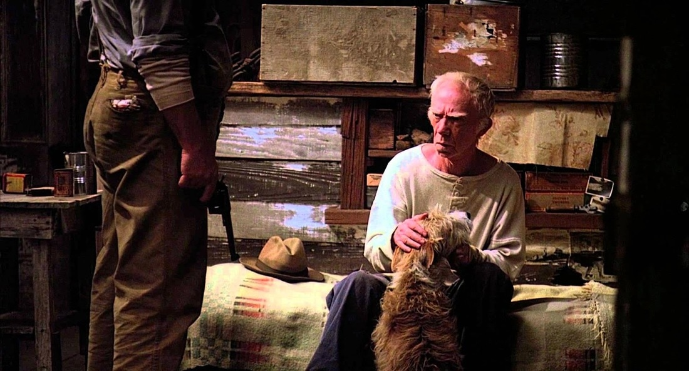

Summary:
The next day, Lennie and George make their way to the ranch bunkhouse, where they are greeted by Candy, an aging “swamper,” or handyman, who has lost his right hand. The bunkhouse is an unadorned building where the men sleep on “burlap ticking” and keep their few possessions in apple boxes that have been nailed to the walls. George is dismayed to find a can of lice powder in his bunk, but Candy assures him that he’s in no danger of being infested, since the man who slept there before George was remarkably clean. George asks about the boss, and Candy reports that although the boss was angry that George and Lennie did not arrive the previous night as he had expected them to, he can be a “pretty nice fella.” Candy relates how the boss gave the men a gallon of whiskey for Christmas, which immediately impresses George.

The boss appears and questions the pair about their late arrival. George blames it on the bus driver, who, he claims, lied to them about their proximity to the ranch. When the boss asks about their skills and previous employment, George speaks for Lennie to prevent him from revealing his lack of intelligence. When Lennie momentarily forgets George’s instructions and speaks, George becomes visibly nervous. Their behavior strikes the boss as suspicious, and he asks why George feels the need to take such good care of his companion. He wonders if George is taking advantage of a man who lacks the faculties to take care of himself. George replies that Lennie is his cousin and was kicked in the head by a horse when he was young, so George has to look out for him. The boss remains suspicious and warns George not to try to pull anything over on him. Nonetheless, they are assigned to one of the grain teams, working under a man named Slim.
Once the boss leaves the bunkhouse, George berates Lennie for having spoken up. Candy overhears George telling Lennie that he is glad they are not actually related. George warns Candy that he doesn’t appreciate other people sticking their noses in his business, but Candy assures him that he minds his own business and has no interest in their affairs. Accompanying Candy is an ancient, half-blind sheepdog, an animal that the old man has raised since it was a puppy. Soon enough, Curley, the boss’s son, a small young man who wears a Vaseline-filled work glove on his left hand and high-heeled boots to distinguish himself from the laborers, joins them. Curley, an aggressive and malicious ex-boxer, immediately senses that he might have some fun at Lennie’s expense, and begins to demand that “the big guy talk.” After Curley leaves, Candy explains that Curley loves beating up big guys, “kind of like he’s mad at ’em because he ain’t a big guy.” Curley’s temper has only gotten worse since his recent marriage to a “tart” who enjoys flirting with the ranch-hands.
Candy leaves to prepare wash basins for the men who will soon return from the fields, and George tells Lennie to steer clear of Curley, because fighting the “bastard” will likely cost them their jobs. Lennie agrees, assuring George that he doesn’t want any trouble. George reminds him again of the meeting place they agreed on should anything go wrong. At that moment, Curley’s wife, a pretty, heavily made-up woman with a nasal voice, appears. She claims to be looking for her husband and flirts with the two men and Slim, the skilled mule driver, who passes by outside. Slim tells her that Curley has gone into the house, and she hurries off. Lennie speaks admiringly of how “purty” the woman is, and George angrily orders him to stay away from “that bitch.” Lennie, suddenly frightened, complains that he wants to leave the ranch, but George reminds him that they need to make some money before they can buy their own land and live their dream.
Slim enters the bunkhouse. His talents make him one of the most important and respected men on the ranch. There is a “gravity in his manner,” and everyone stops talking and listens when he speaks. He converses with Lennie and George, and is quietly impressed by their friendship, appreciating the fact that they look out for one another. The men are joined by Carlson, another ranch-hand. Carlson asks about Slim’s dog, which has just given birth to nine puppies. Slim reports that he drowned four of the puppies immediately because their mother would have been unable to feed them. Carlson suggests that they convince Candy to shoot his old, worthless mutt and raise one of the pups instead. The triangle rings for dinner, and the men filter out of the bunkhouse, with Lennie suddenly excited by the prospect of having a puppy. As George and Lennie prepare to leave, Curley appears again, looking for his wife, and hurries off angrily when they tell him where she went. George expresses his dislike for Curley, and comments that he is afraid he will “tangle” with Curley himself.
(Visit Sparknotes)

 Of Mice and Men
Of Mice and Men